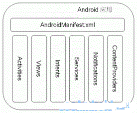

AndroidManifest.xml文件综合详解
一，重要性AndroidManifest.xml是Android应用程序中最重要的文件之一。它是Android程序的全局配置文件，是每个android程序中必须的文件。它位于我们开发的应用程序的根目录下，描述了package中的全局数据，包括package中暴露的组件（activities,services,等等），以及他们各自的实现类，各种能被处理的数据和启动位置等重要信息。
因此，该文件提供了Android系统所需要的关于该应用程序的必要信息，即在该应用程序的任何代码运行之前系统所必须拥有的信息。一个典型的Android应用程序的结构如下图所示：

二，主要功能它指定了该应用程序的Java包：该包名作为应用程序的一个独特标识。
它描述了应用程序组件：该应用程序由哪些activity，service，broadcast receiver和content provider组成。它指定了实现每个组件的类以及公开发布它们的能力(例如，它们能持有哪个Intent信息)。这些声明使Android系统知道这儿有什么组件以及在什么条件下它们可以被载入。
它决定那些进程将容纳应用程序组件。
它声明了本应用程序必须拥有哪些许可，以便访问API的被保护部分，以及与其他应用程序交互。
它也声明了其他应用程序在和该应用程序交互时需要持有的许可。
它列出了Instrumentation类，可以在应用程序运行时提供简档和其他信息。这些声明仅当应用程序在开发和测试过程中被提供；它们将在应用程序正式发布之前被移除。
它声明了该应用程序所需的Android API的最小化水平。
它列出了该应用程序必须链接的库。
三，主要结构及规则下面列表显示了manifest文件的通常的结构以及它可以含有的元素。每个元素，连同它的所有属性，会在各个单独的文档里进行充分的描绘。
<?xml version="1.0" encoding="utf-8"?><manifest> //根节点，描述了package中所有的内容
<uses-permission /> //请求你的package正常运作所需赋予的安全许可。一个manifest能包含零个或更多此元素
<permission /> //声明了安全许可来限制哪些程序能使用你的package中的组件和功能。一个manifest能包含零个或更多此元素
<permission-tree />
<permission-group />
<instrumentation /> //声明了用来测试此package或其他package指令组件的代码。一个manifest能包含零个或更多此元素
<uses-sdk /> //指定当前应用程序兼容的最低sdk版本号
<application> //包含package中application级别组件声明的根节点。此元素也可包含 application中全局和默认的属性，如标签，icon，主题，必要的权限，等等。一个manifest能包含零个或一个此元素（不允许多余一个）
<activity> //用来与用户交互的主要工具。当用户打开一个应用程序的初始页面时一个activity,大部分被使用到的其他页面也由不同的activity所实现并声明在另外的activity标记中。
<intent-filter> //声明了指定的一组组件支持的Intent值
<action />
<category />
<data />
<type/>
<schema/>
<authority/>
<path/>
</intent-filter>
<meta-data />
</activity>
<activity-alias>
<intent-filter> . . . </intent-filter>
<meta-data />
</activity-alias>
<service> //Service是能在后台运行任意时间的组件
<intent-filter> . . . </intent-filter>
<meta-data/>
</service>
<receiver> //IntentReceiver能使你的application获得数据的改变或者发生的操作，即使它当前不在运行
<intent-filter> . . . </intent-filter>
<meta-data />
</receiver>
<provider> //ContentProvider是用来管理持久化数据并发布给其他应用程序使用的组件
<grant-uri-permission />
<meta-data />
</provider>
<uses-library />
<uses-configuration />
</application>
</manifest>
下面是按照字母顺序排列的所有可以出现在manifest文件里的元素。它们是唯一合法的元素；你不能加入你自己的元素或属性。
<action><activity>
<activity-alias>
<application>
<category>
<data>
<grant-uri-permission>
<instrumentation>
<intent-filter>
<manifest>
<meta-data>
<permission>
<permission-group>
<permission-tree>
<provider>
<receiver>
<service>
<uses-configuration>
<uses-library>
<uses-permission>
<uses-sdk>
说明：AndroidManifest.xml文件的结构、元素，以及元素的属性，可以在Android SDK文档中查看详细说明。而在看这些众多的元素以及元素的属性前，需要先了解一下这些元素在命名、结构等方面的规则：
1、元素：在所有的元素中只有<manifest>和<application>是必需的，且只能出现一次。如果一个元素包含有其他子元素，必须通过子元素的属性来设置其值。处于同一层次的元素，这些元素的说明是没有顺序的。
2、属性：按照常理，所有的属性都是可选的，但是有些属性是必须设置的。那些真正可选的属性，即使不存在，其也有默认的数值项说明。除了根元素<manifest>的属性，所有其他元素属性的名字都是以android:前缀的；
3、定义类名：所有的元素名都对应其在SDK中的类名，如果你自己定义类名，必须包含类的数据包名，如果类与application处于同一数据包中，可以直接简写为“.”；
4、多数值项：如果某个元素有超过一个数值，这个元素必须通过重复的方式来说明其某个属性具有多个数值项，且不能将多个数值项一次性说明在一个属性中；
5、资源项说明：当需要引用某个资源时，其采用如下格式：@[package :]type :name 。 例如 <activity android:icon=”@drawable/icon ” . . . >
6、字符串值：类似于其他语言，如果字符中包含有字符“\”，则必须使用转义字符“\\”；
四，详细说明值得一提一些常用之处：
1，几乎所有的AndroidManifest.xml（以及许多其他Android的xml的文件）在第一个元素中包含了命名空间的声明xmlns:android="http://schemas.android.com/apk/res/android"。这样使得Android中各种标准属性能在文件中使用，提供了大部分元素中的数据。
2，大部分manifests包含了单个<application>的元素，它定义了所有的application级别组件和属性，并能在package中使用。
3，任何被用户看作顶层应用程序，并能被程序启动器所用的package，需要包含至少一个Activity组件来支持MAIN操作和LAUNCHER种类。动作android.intent.action.MAIN指示这是应用程序的入口点。类别 android.intent.category.LAUNCHER将此Activity放在启动器窗口中。
在最外层的<manifest>中包含了包名如package="cn.androidlover.demo"、软件的版本号android:versionCode="1"以及android:versionName="1.0"的属性，而里面一层的<application>分支中将可能包含Android程序的四种对象 Activity、Service、Content Provider以及Receiver。我们每添加上面四个类型中的任一种新对象都需要在androidmanifest.xml文件中添加相应节点，否则运行时将会产生异常。每一个activity必须要一个<activity>标记对应，无论它给外部使用或是只用于自己的package 中。如果一个activity没有对应的标记，你将不能运行它。
此文件一个重要的地方就是它所包含的intent-filters。这些filters描述了activity启动的位置和时间。每当一个 activity（或者操作系统）要执行一个操作，例如：打开网页或联系簿时，它创建出一个intent的对象。它能承载一些信息描述了你想做什么，你想处理什么数据，数据的类型，和一些其他信息。Android比较了intent对象中和每个application所暴露的intent-filter中的信息，来找到最合适的activity来处理调用者所指定的数据和操作。关于intent的更多信息请访问Intent参考页面。
application属性介绍：
有关AndroidManifest.xml文件的application分支我们有必要了解一些常见的属性，这里可以看到一些我们实用的选项，比如允许调试android:debuggable、任务关系android:taskAffinity，比如我们常见的方式创建一个新的任务实用标记 FLAG_ACTIVITY_NEW_TASK，为程序制定一个主题，可以使用android:theme指向一个主题文件。平时我们创建的程序使用一些安全敏感项，会需要请求系统许可权限，这里可以使用android:permission来制定相关的许可，每个程序的service、 activity、content provider、receiver都需要在application的节点内实现。有关完整的属性可以查看:
<application android:allowClearUserData=["true" | "false"]android:allowTaskReparenting=["true" | "false"]
android:debuggable=["true" | "false"]
android:description="string resource"
android:enabled=["true" | "false"]
android:hasCode=["true" | "false"]
android:icon="drawable resource"
android:label="string resource"
android:manageSpaceActivity="string"
android:name="string"
android:permission="string"
android:persistent=["true" | "false"]
android:process="string"
android:taskAffinity="string"
android:theme="resource or theme" >
. . .
</application>
另外：Activity的属性常用的可能为android:name和android:label两个，但我们需要了解所有的属性以帮助解决复杂的问题，完整的如下:
android:allowTaskReparenting=["true" | "false"]android:alwaysRetainTaskState=["true" | "false"]
android:clearTaskOnLaunch=["true"" | "false"]
android:configChanges=[one or more of: "mcc" "mnc" "locale" "touchscreen" "keyboard" "keyboardHidden" "navigation" "orientation" "fontScale"]
android:enabled=["true" | "false"]
android:excludeFromRecents=["true" | "false"]
android:exported=["true" | "false"]
android:finishOnTaskLaunch=["true" | "false"]
android:icon="drawable resource"
android:label="string resource"
android:launchMode=["multiple" | "singleTop" | "singleTask" | "singleInstance"]
android:multiprocess=["true" | "false"]
android:name="string"
android:noHistory=["true" | "false"]
android:permission="string"
android:process="string"
android:screenOrientation=["unspecified" | "user" | "behind" | "landscape" | "portrait" | "sensor" | "nonsensor"]
android:stateNotNeeded=["true" | "false"]
android:taskAffinity="string"
android:theme="resource or theme"
android:windowSoftInputMode=[one or more of: "stateUnspecified" "stateUnchanged" "stateHidden" "stateAlwaysHidden" "stateVisible" "stateAlwaysVisible" "adjustUnspecified" "adjustResize" "adjustPan"]
从Provider节点中用到的定义，可以看到包含了权限控制、排序方式完整的如下:
<provider android:authorities="list"android:enabled=["true" | "false"]
android:exported=["true" | "false"]
android:grantUriPermissions=["true" | "false"]
android:icon="drawable resource"
android:initOrder="integer"
android:label="string resource"
android:multiprocess=["true" | "false"]
android:name="string"
android:permission="string"
android:process="string"
android:readPermission="string"
android:syncable=["true" | "false"]
android:writePermission="string" >
</provider>
而对于服务相关定义如下:
<service android:enabled=["true" | "false"]android:exported[="true" | "false"]
android:icon="drawable resource"
android:label="string resource"
android:name="string"
android:permission="string"
android:process="string" >
</service>
最后是Broadcast使用的Receiver定义，一般配合和隐式处理。
<receiver android:enabled=["true" | "false"]android:exported=["true" | "false"]
android:icon="drawable resource"
android:label="string resource"
android:name="string"
android:permission="string"
android:process="string" >
</receiver>
总之，AndroidManifest.xml文件虽然看起来复杂，但是，只要我们理清中里面各元素的作用，那么一切就变得简单了。